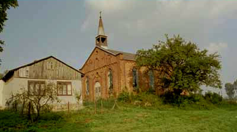
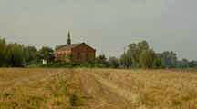
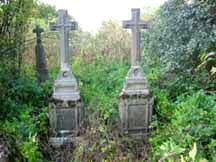
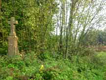
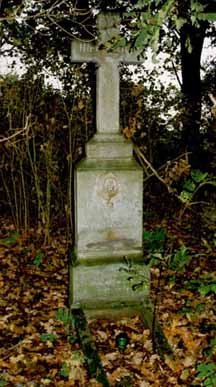
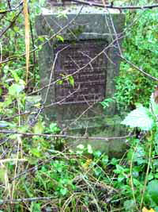

The following are pictures from the Gabin Parish. Click on the thumbnail view for an enlarged view of the picture.
|  | ||
| Wionczemin Lutheran Church and school, now abandoned. This church was built in 1934 (some sources suggest 1938), replacing a previous chapel that had been seriously damaged in a 1924 flood. This church did not have a long history as the community was previously served by the church in Gabin. - photo courtesy of Annegret Krause |
||
|  | Trail leading up to the Wionczemin Lutheran Church. - photo courtesy Annegret Krause |
|
| The cemetery at Wionczemin is not maintained and is overgrown with nettles. brambles and brush. About 20 headstones remain with surnames like Witzke, Rinas, Hauer, Potz, Kuehlmann, Ratz, Neitsch, Krueger, and Heinrich. - photos courtesy Annegret Krause |
||
| Wionczemin - Marker for Samuel Rinas (1853 - 1915) and his wife Anna Markwardt (1852 - 1923). | Wionczemin - Marker for Martin Witzke (1838 - 1908) and his wife Anna Neitcz [Neitsch] (1843 - 1908). | |
|  |  | |
| German cemetery at Borki - Only a few markers remain in this dark and overgrown place. This is the headstone for Olga Emma Ratz. - photo courtesy of Annegret Krause |
 | |
|  | German cemetery at Sady - Only a few graves can be idenfied in this overgrown cemetery including Rahn, Klatt, Glaeske, and Brokop. This marker is for Jakob Dobslaw (1887-1927). - photo courtesy Annegret Krause |
|
{kind=link}
{kind=link}
{kind=link}
{kind=link}
{kind=link}
{kind=link}